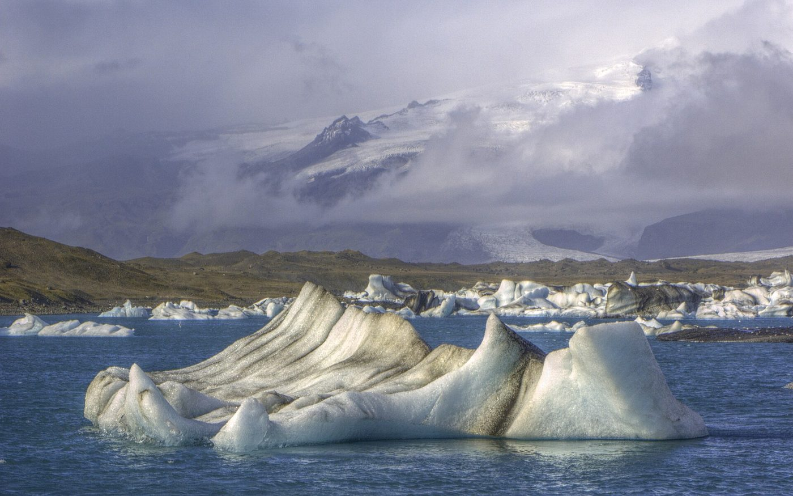

Ring Road · counterclockwise · Blue Lagoon to Sky Lagoon
Nine days
Arrive Keflavík, a Retreat Spa morning, then the south coast, glacier lagoon, East Fjords, Mývatn, whales at Húsavík, and a last night in Reykjavík with Sky Lagoon. Route 1 the whole way — no highland F-roads.
Tentative: Fri 25 Jun – Sat 3 Jul 2027. Two people, Toyota RAV4. Flights and reservations are still to confirm; all times are planning targets. Night 1 at Berg carries the same early-arrival-access question as any KEF morning landing.
Where we sleep
- Night 1 · Jun 25 Hotel Berg, Keflavík — early arrival access to arrange separately
- Night 2 · Jun 26 Black Beach Suites, Vík — one night
- Night 3 · Jun 27 Fosshotel Glacier Lagoon, Freysnes / Hof
- Night 4 · Jun 28 Hótel Aldan, Seyðisfjörður
- Night 5 · Jun 29 Vogafjós Farm Resort, Mývatn
- Night 6 · Jun 30 Hotel Kea, Akureyri
- Night 7 · Jul 1 Hótel Hvammstangi, Vatnsnes
- Night 8 · Jul 2 Hotel Borg, Reykjavík — Sky Lagoon that afternoon
The days
Overall cost
Estimates for two in USD, not confirmed quotes or guaranteed exchange rates. Eight Iceland overnight stays are counted once. Flights, any rental-coverage upgrade beyond the allowance, Berg early access and optional extras are additional. Retreat Spa day passes are the largest single activity line — confirm whether the published rate is per person or per changing room before budgeting. Each day has an expandable cost breakdown. Fuel and the RAV4 rental are counted once above.
Overall driving
Planned driving from each day page. Times are planning allowances, not live traffic estimates. Add 10–15% for photo stops. The only repeated road is the 25-minute hop back to Sólheimajökull on Day 3. Day 4 is the long one (~5h 05m). Optional extras stay off the total: Öxi instead of Route 1, the Tröllaskagi loop, Bjórböðin, Hengifoss.
Route 1 is fully paved and the plan. Öxi (Rd 939) and Dettifoss east (Rd 864) are gravel fallbacks only — check the rental contract and umferdin.is before counting on either. Book the glacier hike, Jökulsárlón zodiac, whale watching, Retreat Spa and Dill months ahead; late June fills. Check almannavarnir.is on Day 1 if Reykjanes vents are closed.
Open the Home Screen app on Wi-Fi after updates and check the day pages before going offline. Download Iceland maps separately, including the East Fjords and Möðrudalsöræfi: external maps, booking links and live conditions need connectivity. Offline itinerary notes cannot report current closures.
Packing
Drafted from the day pages — every line here comes from something the itinerary already asks for. Taps are saved on this phone.